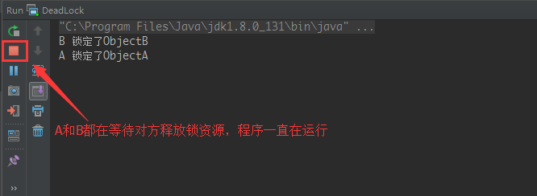

synchronized VS Lock
synchronized 的缺陷
synchronized 是 java 中的一个关键字，也就是说是 Java 语言内置的特性。那么为什么会出现 Lock 呢？
如果一个代码块被 synchronized 修饰了，当一个线程获取了对应的锁，并执行该代码块时，其他线程便只能一直等待，等待获取锁的线程释放锁，而这里获取锁的线程释放锁会有三种情况：
- 获取锁的线程执行完了该代码块，然后线程释放对锁的占有；
- 线程执行发生异常，此时 JVM 会让线程自动释放锁。
- 这个主要是在等待唤醒机制里面的 wait()方法，//在等待的时候立即释放锁，方便其他的线程使用锁而且被唤醒时，就在此处唤醒，
如果这个获取锁的线程由于要等待 IO 或者其他原因（比如调用 sleep 方法）被阻塞了，但是又没有释放锁，其他线程便只能一直等待，非常影响程序执行效率。因因此就需要有一种机制可以不让等待的线程一直无期限地等待下去（比如只等待一定的时间或者能够响应中断），通过 Lock 就可以办到。
我们可以理解同步代码块和同步方法的锁对象问题，但是我们并没有直接看到在哪里加上了锁，在哪里释放了锁，同时为了更好地释放锁。
为了更清晰的表达如何加锁和释放锁，JDK5 以后提供了一个新的锁对象 Lock。
另外，通过 Lock 可以知道线程有没有成功获取到锁，这个是 synchronized 无法办到的。
总结一下，Lock 提供了比 synchronized 更多的功能：
- Lock 不是 Java 语言内置的，synchronized 是 Java 语言的关键字，因此是内置特性。Lock 是一个类，通过这个类可以实现同步访问；
- synchronized 是在 JVM 层面上实现的，不但可以通过一些监控工具监控 synchronized 的锁定，而且在代码执行时出现异常，JVM 会自动释放锁定，但是使用 Lock 则不行，Lock 是通过代码实现的，要保证锁定一定会被释放，就必须将 unLock()放到 finally{}中；
- 在资源竞争不是很激烈的情况下，Synchronized 的性能要优于 ReetrantLock，但是在资源竞争很激烈的情况下，Synchronized 的性能会下降几十倍，但是 ReetrantLock 的性能能维持常态；
- Lock 和 synchronized 有一点很大的不同，采用 synchronized 不需要用户去手动释放锁，当 synchronized 方法或者 synchronized 代码块执行完之后，系统会自动让线程释放对锁的占用；而 Lock 则必须要用户去手动释放锁，如果没有主动释放锁，就有可能导致出现死锁现象。
java.util.concurrent.locks 下并发相关类
Lock 接口
public interface Lock {
void lock();
void lockInterruptibly() throws InterruptedException;
boolean tryLock();
boolean tryLock(long time, TimeUnit unit) throws InterruptedException;
void unlock();
Condition newCondition();
}
lock()：获取锁，如果锁已被其他线程获取，则进行等待。
如果采用 Lock，必须主动去释放锁，并且在发生异常时，不会自动释放锁。因此一般来说，使用 Lock 必须在 try{}catch{}块中进行，并且将释放锁的操作放在 finally 块中进行，以保证锁一定被被释放，防止死锁的发生。
lock()使用示例：
Lock lock = new ReentrantLock();
lock.lock();
try {
} catch (Exception e) {
e.printStackTrace();
} finally {
lock.unlock();
}
tryLock()：用来尝试获取锁，如果获取成功，则返回 true，如果获取失败（即锁已被其他线程获取），则返回 false，这个方法无论如何都会立即返回，拿不到锁时不会一直等待。
tryLock(long time, TimeUnit unit)：和 tryLock()方法是类似的，区别在于这个方法在拿不到锁时会等待一定的时间，在时间期限之内如果还拿不到锁，就返回 false。如果如果一开始拿到锁或者在等待期间内拿到了锁，则返回 true。
tryLock()使用示例：
Lock lock = new ReentrantLock();
if (lock.tryLock()) {
try {
} catch (Exception e) {
e.printStackTrace();
} finally {
lock.unlock();
}
} else {
}
lockInterruptibly()：通过这个方法去获取锁时，如果线程正在等待获取锁，则这个线程能够响应中断，即中断线程的等待状态。也就使说，当两个线程同时通过 lock.lockInterruptibly()想获取某个锁时，假若此时线程 A 获取到了锁，而线程 B 只有在等待，那么对线程 B 调用 threadB.interrupt()方法能够中断线程 B 的等待过程。由于 lockInterruptibly()的声明中抛出了异常，
所以 lock.lockInterruptibly()必须放在 try 块中或者在调用 lockInterruptibly()
的方法外声明抛出 InterruptedException。
lockInterruptibly()使用示例：
public void function() throws InterruptedException {
Lock lock = new ReentrantLock();
lock.lockInterruptibly();
try {
} catch (Exception e) {
e.printStackTrace();
} finally {
lock.unlock();
}
}
注意，当一个线程获取了锁之后，是不会被 interrupt()方法中断的。单独调用 interrupt()方法不能中断正在运行过程中的线程，只能中断阻塞过程中的线程。因此当通过 lockInterruptibly()方法获取某个锁时，如果不能获取到，只有进行等待的情况下，是可以响应中断的。而用 synchronized 修饰的话，当一个线程处于等待某个锁的状态，是无法被中断的，只有一直等待下去。
unLock()：释放锁
newCondition()：获取条件变量
ReentrantLock
ReentrantLock 意思是“可重入锁”，ReentrantLock 是唯一实现了 Lock 接口的类，并且 ReentrantLock 提供了更多的方法。下面通过一些实例看具体看一下如何使用 ReentrantLock。
示例
import java.util.concurrent.locks.Lock;
import java.util.concurrent.locks.ReentrantLock;
public class ReentrantLockTest {
private Lock lock = new ReentrantLock();
public static void main(String[] args) {
final ReentrantLockTest test = new ReentrantLockTest();
new Thread(new Runnable() {
public void run() {
test.method();
}
}).start();
new Thread(new Runnable() {
public void run() {
test.method();
}
}).start();
}
public void method() {
try {
lock.lock();
System.out.println(Thread.currentThread().getName() + " 获得了锁! ");
} catch (Exception e) {
e.printStackTrace();
} finally {
System.out.println(Thread.currentThread().getName() + " 释放了锁! ");
lock.unlock();
}
}
}
运行结果：
Thread-0 获得了锁!
Thread-0 释放了锁!
Thread-1 获得了锁!
Thread-1 释放了锁!
ReadWriteLock 接口
public interface ReadWriteLock {
// Returns the lock used for reading.
Lock readLock();
// Returns the lock used for writing.
Lock writeLock();
}
一个用来获取读锁，一个用来获取写锁。也就是说将文件的读写操作分开，分成 2 个锁来分配给线程，从而使得多个线程可以同时进行读操作。
示例
在线文件编辑器。同一份文件，一个人在读的时候，其他人不能写，多人可以同时读；同理，一个人在写的时候，其他人也不能读，同一时刻只能有一个人写。
数据类 Data：
public class Data {
private final char[] buffer;
private final SelfReadWriteLock lock = new SelfReadWriteLock();
public Data(int size){
buffer = new char[size];
for (int i = 0; i < size; ++i){
buffer[i] = '*';
}
}
public String read() throws InterruptedException {
lock.readLock(); //读取上锁
try {
return doRead(); //读取数据
} finally {
lock.readUnlock();
}
}
public String doRead() {
StringBuffer str = new StringBuffer();
for (int i = 0; i < buffer.length; ++i){
str.append(buffer[i]);
}
sleep(100);
return str.toString();
}
public void write(char c) throws InterruptedException {
lock.writeLock();
try {
doWrite(c);
} finally {
lock.writeUnlock();
}
}
public void doWrite(char c){
for (int i = 0; i < buffer.length; ++i){
buffer[i] = c;
sleep(100);
}
}
public void sleep(long ms){
try {
Thread.sleep(ms);
} catch (InterruptedException e) {
e.printStackTrace();
}
}
}
自定义读写锁：
package me.ilcb.java.readwrite;
public class SelfReadWriteLock {
private int readThreadCounter = 0; // 正在读取的进程数 (0个或多个)
private int waitingWriteCounter = 0; // 等待写入的线程数 (0个或多个)
private int writeThreadCounter = 0; // 正在写入的县城数 (0个或多个)
private boolean writeFlag = true; // 是否写入优先 (默认为是)
// 读取枷锁
public synchronized void readLock() throws InterruptedException {
// 若存在正在写入的线程，或当前写入优先时存在等待写入的线程，则将当前线程置为等待状态
while(writeThreadCounter > 0 || (writeFlag && waitingWriteCounter > 0)){
wait();
}
// 使正在读取的线程数加一
readThreadCounter++;
}
// 读取解锁
public synchronized void readUnlock(){
//正在读取的线程数减1
readThreadCounter--;
// 读取结束，写入优先
writeFlag = true;
//通知所有处于wait状态的线程
notifyAll();
}
// 写入加锁
public synchronized void writeLock() throws InterruptedException {
//等待写入的线程数加1
waitingWriteCounter++;
try {
//若存在正在读取的线程，或存在正在写入的线程，将当前线程设置为等待状态
while (readThreadCounter > 0 || writeThreadCounter > 0) {
wait();
}
} catch (Exception e) {
// 等待写入的线程数减1
waitingWriteCounter--;
}
// 正在写入的线程数加1
writeThreadCounter++;
}
// 写入解锁
public synchronized void writeUnlock() {
// 正在写入的线程数减1
writeThreadCounter--;
//写入结束，读取优先
writeFlag = false;
//通知所有处于wait状态的线程
notifyAll();
}
}
模拟读线程：
public class ReadThread extends Thread {
private final Data data;
public ReadThread(Data data){
this.data = data;
}
public void run(){
while(true){
long begin = System.currentTimeMillis();
for (int i = 0; i < 10; i++) {
String result = null;
try {
result = data.read();
} catch (InterruptedException e) {
e.printStackTrace();
}
System.out.println(Thread.currentThread().getName() + " => " + result);
}
long time = System.currentTimeMillis() - begin;
System.out.println(Thread.currentThread().getName() + " -- " + time + "ms");
}
}
}
模拟写线程：
public class WriteThread extends Thread {
private Data data;
private String str;
private int index = 0;
public WriteThread(Data data, String str){
this.data = data;
this.str = str;
}
public void run(){
while(true){
char c = next();
try {
data.write(c);
} catch (InterruptedException e) {
e.printStackTrace();
}
}
}
public char next(){
char c = str.charAt(index);
index++;
if (index > str.length() - 1){
index = 0;
}
return c;
}
}
测试：
public class Client {
public static void main(String[] args){
Data data = new Data(10);
new ReadThread(data).start();
new ReadThread(data).start();
new ReadThread(data).start();
new ReadThread(data).start();
new ReadThread(data).start();
new WriteThread(data, "ABCDEF").start();
new WriteThread(data, "123456").start();
}
}
基于 Java ReadWriteLock 实现只需要修改 Data：
public class Data {
private final char[] buffer;
private final ReadWriteLock lock = new ReentrantReadWriteLock(); // 创建读写锁
private final Lock readLock = lock.readLock(); // 获取读锁
private final Lock writeLock = lock.writeLock(); // 获取写锁
public Data(int size){
buffer = new char[size];
for (int i = 0; i < size; ++i){
buffer[i] = '*';
}
}
public String read() throws InterruptedException {
readLock.lock(); //读取上锁
try {
return doRead(); //读取数据
} finally {
readLock.unlock();
}
}
public String doRead() {
StringBuffer str = new StringBuffer();
for (int i = 0; i < buffer.length; ++i){
str.append(buffer[i]);
}
sleep(100);
return str.toString();
}
public void write(char c) throws InterruptedException {
writeLock.lock();
try {
doWrite(c);
} finally {
writeLock.unlock();
}
}
public void doWrite(char c){
for (int i = 0; i < buffer.length; ++i){
buffer[i] = c;
sleep(100);
}
}
public void sleep(long ms){
try {
Thread.sleep(ms);
} catch (InterruptedException e) {
e.printStackTrace();
}
}
}
ReentrantReadWriteLock
实现了 ReadWriteLock 接口：readLock()和 writeLock()用来获取读锁和写锁。
Lock 和 synchronized 的选择
Lock 和 synchronized 有以下几点不同：
- Lock 是一个接口，而 synchronized 是 Java 中的关键字，synchronized 是内置的语言实现；
- synchronized 在发生异常时，会自动释放线程占有的锁，因此不会导致死锁现象发生；而 Lock 在发生异常时，如果没有主动通过 unLock()去释放锁，则很可能造成死锁现象，因此使用 Lock 时需要在 finally 块中释放锁；
- Lock 可以让等待锁的线程响应中断，而 synchronized 却不行，使用 synchronized 时，等待的线程会一直等待下去，不能够响应中断；
- 通过 Lock 可以知道有没有成功获取锁，而 synchronized 却无法办到；
- Lock 可以提高多个线程进行读操作的效率；
在性能上来说，如果竞争资源不激烈，两者的性能是差不多的，而当竞争资源非常激烈时（即有大量线程同时竞争），此时 Lock 的性能要远远优于 synchronized。所以说，在具体使用时要根据适当情况选择。
Condition
条件变量 Condition
Condition 的作用是对锁进行更精确的控制，Condition 中的 await()方法相当于 Object 的 wait()方法，Condition 中的 signal()方法相当于 Object 的 notify()方法，Condition 中的 signalAll()相当于 Object 的 notifyAll()方法。不同的是，Object 中的 wait(),notify(),notifyAll()方法是和”同步锁”(synchronized)捆绑使用的；而 Condition 是需要与”互斥锁”/“共享锁”(Lock)捆绑使用的。
Condition（也称为条件队列或条件变量）为线程提供了一个含义，以便在某个状态条件现在可能为 true 的另一个线程通知它之前，一直挂起该线程（即让其“等待”）。因为访问此共享状态信息发生在不同的线程中，所以它必须受保护，因此要将某种形式的锁与该条件相关联。等待提供一个条件的主要属性是：以原子方式释放相关的锁，并挂起当前线程，就像Object.wait()做的那样。
条件变量需要与锁绑定，而且多个 Condition 需要绑定到同一锁上，获取一个条件变量的方法是 Lock.newCondition()。
Condition 方法
public interface Condition
/**
* 使当前线程在接到信号或被中断之前一直处于等待状态
* 与此Condition 相关的锁以原子方式释放，并且出于线程调度的目的，将禁用当前线程，且在发生以下四种情况之一以前，当前线程将一直处于休眠状态：
* 其他某个线程调用此Condition的signal()方法，并且碰巧将当前线程选为被唤醒的线程；
* 或者其他某个线程调用此Condition的signalAll()方法；
* 或者其他某个线程中断当前线程，且支持中断线程的挂起；
* 或者发生“虚假唤醒”
* 在所有情况下，在此方法可以返回当前线程之前，都必须重新获取与此条件有关的锁。在线程返回时，可以保证 它保持此锁。
*/
void await() throws InterruptedException;
/**
* 使当前线程在接到信号之前一直处于等待状态
* 与此Condition相关的锁以原子方式释放，并且出于线程调度的目的，将禁用当前线程，且在发生以下三种情况之一以前，当前线程将一直处于休眠状态：
* 其他某个线程调用此Condition的signal()方法，并且碰巧将当前线程选为被唤醒的线程；
* 或者其他某个线程调用此Condition的signalAll()方法；
* 或者发生“虚假唤醒”
* 在所有情况下，在此方法可以返回当前线程之前，都必须重新获取与此条件有关的锁。在线程返回时，可以保证它保持此锁。
*/
void awaitUninterruptibly();
/**
* 使当前线程在接到信号、被中断或到达指定等待时间之前一直处于等待状态。
* 与此Condition相关的锁以原子方式释放，并且出于线程调度的目的，将禁用当前线程，且在发生以下五种情况之一以前，当前线程将一直处于休眠状态：
* 其他某个线程调用此Condition的signal()方法，并且碰巧将当前线程选为被唤醒的线程；
* 或者其他某个线程调用此Condition的signalAll()方法；
* 或者其他某个线程中断当前线程，且支持中断线程的挂起；
* 或者已超过指定的等待时间；
* 或者发生“虚假唤醒”。
* 在所有情况下，在此方法可以返回当前线程之前，都必须重新获取与此条件有关的锁。在线程返回时，可以保证它保持此锁。
*/
long awaitNanos(long nanosTimeout) throws InterruptedException;
/**
* 实际上就是释放锁，然后挂起线程，一旦条件满足就被唤醒，再次获取锁
*/
boolean await(long time, TimeUnit unit) throws InterruptedException;
/**
* 造成当前线程在接到信号、被中断或到达指定最后期限之前一直处于等待状态。
* 与此Condition相关的锁以原子方式释放，并且出于线程调度的目的，将禁用当前线程，且在发生以下五种情况之一以前，当前线程将一直处于休眠状态：
* 其他某个线程调用此Condition的signal()方法，并且碰巧将当前线程选为被唤醒的线程；
* 或者其他某个线程调用此Condition的signalAll()方法；
* 或者其他某个线程中断当前线程，且支持中断线程的挂起；
* 或者指定的最后期限到了；
* 或者发生“虚假唤醒”。
* 在所有情况下，在此方法可以返回当前线程之前，都必须重新获取与此条件有关的锁。在线程返回时，可以保证它保持此锁。
*/
boolean awaitUntil(Date deadline) throws InterruptedException;
/**
* 唤醒一个等待线程。
* 如果所有的线程都在等待此条件，则选择其中的一个唤醒。在从await返回之前，该线程必须重新获取锁
*/
void signal();
/**
* 唤醒所有等待线程。
* 如果所有的线程都在等待此条件，则唤醒所有线程。在从await返回之前，每个线程都必须重新获取锁
*/
void signalAll();
每一个 Lock 可以有任意数据的 Condition 对象，Condition 是与 Lock 绑定的，所以就有 Lock 的公平性特性：如果是公平锁，线程为按照 FIFO 的顺序从 Condition.await 中释放，如果是非公平锁，那么后续的锁竞争就不保证 FIFO 顺序了。
Condition 实现生产者消费者示例
import java.util.concurrent.locks.Condition;
import java.util.concurrent.locks.Lock;
import java.util.concurrent.locks.ReentrantLock;
public class ProductQueue<T> {
private final T[] items;
private final Lock lock = new ReentrantLock();
private Condition notFull = lock.newCondition();
private Condition notEmpty = lock.newCondition();
private int head, tail, count;
public ProductQueue(int maxSize) {
items = (T[]) new Object[maxSize];
}
public ProductQueue() {
this(10);
}
public void put(T ele) throws InterruptedException {
lock.lock();
try {
// 如果缓冲已满，则等待；直到缓冲不是满的，将ele添加到缓冲中
while (count == items.length) {
System.out.println("缓冲区已满，请等待!");
notFull.await();
}
items[tail] = ele;
if (++tail == items.length) {
tail = 0;
}
++count;
// 唤醒take线程，因为take线程通过notEmpty.await()等待
notEmpty.signalAll();
} finally {
lock.unlock();
}
}
public T take() throws InterruptedException {
lock.lock();
try {
// 如果缓冲为空，则等待,直到缓冲不为空，将ele从缓冲中取出。
while (count == 0) {
System.out.println("没有元素，请等待");
notEmpty.await();
}
T ele = items[head];
items[head] = null;
if (++head == items.length) {
head = 0;
}
--count;
// 唤醒put线程，因为put线程通过notFull.await()等待
notFull.signalAll();
return ele;
} finally {
lock.unlock();
}
}
}
public class PutTakeTest {
private static ProductQueue<Integer> queue = new ProductQueue<Integer>();
public static void main(String[] args) {
for (int i = 0; i < 5; ++i) {
new PutThread("p" + i, i).start();
new TakeThread("t" + i).start();
}
}
static class PutThread extends Thread {
private int num;
public PutThread(String name, int num) {
super(name);
this.num = num;
}
public void run() {
try {
queue.put(num);
} catch (InterruptedException e) {
e.printStackTrace();
}
System.out.println(Thread.currentThread().getName() + " put " + num);
}
}
static class TakeThread extends Thread {
public TakeThread(String name) {
super(name);
}
public void run() {
int ele = 0;
try {
ele = queue.take();
} catch (InterruptedException e) {
e.printStackTrace();
}
System.out.println(Thread.currentThread().getName() + " take " + ele);
}
}
}
某次运行结果：
p0 put 0
t0 take 0
没有元素，请等待
没有元素，请等待
没有元素，请等待
p2 put 2
t1 take 2
没有元素，请等待
没有元素，请等待
p4 put 4
没有元素，请等待
t2 take 4
没有元素，请等待
p1 put 1
没有元素，请等待
t3 take 1
p3 put 3
t4 take 3
锁的概念
可重入锁
如果锁具备可重入性，则称作为可重入锁。像 synchronized 和 ReentrantLock 都是可重入锁，可重入性实际上表明了锁的分配机制：基于线程的分配，而不是基于方法调用的分配。举个简单的例子，当一个线程执行到某个 synchronized 方法时，比如说 method1，在 method1 中会调用另外一个 synchronized 方法 method2，此时线程不必重新去申请锁，而是可以直接执行方法 method2。
原理上它有一个与锁相关的获取计数器，如果拥有锁的某个线程再次得到锁，那么获取计数器就加 1，然后锁需要被释放两次才能获得真正释放。这模仿了 synchronized 的语义：如果线程进入由线程已经拥有的
监控器保护的 synchronized 块，就允许线程继续进行，当线程退出第二个（或者后续）
synchronized 块的时候，不释放锁，只有线程退出它进入的监控器保护的第一个 synchronized 块时，才释放锁。
看下面这段代码就明白了：
class MyClass {
public synchronized void method1() {
method2();
}
public synchronized void method2() {
}
}
上述代码中的两个方法 method1 和 method2 都用 synchronized 修饰了，假如某一时刻，线程 A 执行到了 method1，此时线程 A 获取了这个对象的锁，而由于 method2 也是 synchronized
方法，假如 synchronized 不具备可重入性，此时线程 A 需要重新申请锁。但是这就会造成一个
问题，因为线程 A 已经持有了该对象的锁，而又在申请获取该对象的锁，这样就会线程 A 一直等待
永远不会获取到的锁。而由于 synchronized 和 Lock 都具备可重入性，所以不会发生上述现象。
可中断锁
可中断锁：即可以中断的锁。
在 Java 中，synchronized 就不是可中断锁，而 Lock 是可中断锁。
如果某一线程 A 正在执行锁中的代码，另一线程 B 正在等待获取该锁，可能由于等待时间过长，线程 B 不想等待了，想先处理其他事情，我们可以让它中断自己或者在别的线程中中断它，这种就是可中
断锁。
公平锁
公平锁即尽量以请求锁的顺序来获取锁。比如同是有多个线程在等待一个锁，当这个锁被释放时，等待时间最久的线程（最先请求的线程）会获得该所，这种就是公平锁。
非公平锁即无法保证锁的获取是按照请求锁的顺序进行的。这样就可能导致某个或者一些线程永远获取不到锁。
在 Java 中，synchronized 就是非公平锁，它无法保证等待的线程获取锁的顺序。
而对于 ReentrantLock 和 ReentrantReadWriteLock，它默认情况下是非公平锁，但是可以设置为
公平锁。
看一下这 2 个类的源代码就清楚了：
/**
* Sync object for non-fair locks
*/
static final class NonfairSync extends Sync {
private static final long serialVersionUID = 7316153563782823691L;
/**
* Performs lock. Try immediate barge, backing up to normal
* acquire on failure.
*/
final void lock() {
if (compareAndSetState(0, 1))
setExclusiveOwnerThread(Thread.currentThread());
else
acquire(1);
}
protected final boolean tryAcquire(int acquires) {
return nonfairTryAcquire(acquires);
}
}
/**
* Sync object for fair locks
*/
static final class FairSync extends Sync {
private static final long serialVersionUID = -3000897897090466540L;
final void lock() {
acquire(1);
}
/**
* Fair version of tryAcquire. Don't grant access unless
* recursive call or no waiters or is first.
*/
protected final boolean tryAcquire(int acquires) {
final Thread current = Thread.currentThread();
int c = getState();
if (c == 0) {
if (!hasQueuedPredecessors() &&
compareAndSetState(0, acquires)) {
setExclusiveOwnerThread(current);
return true;
}
} else if (current == getExclusiveOwnerThread()) {
int nextc = c + acquires;
if (nextc < 0)
throw new Error("Maximum lock count exceeded");
setState(nextc);
return true;
}
return false;
}
}
}
在 ReentrantLock 中定义了 2 个静态内部类，一个是 NotFairSync，一个是 FairSync，分别用来实现非公平锁和公平锁。
我们可以在创建 ReentrantLock 对象时，通过以下方式来设置锁的公平性：
ReentrantLock lock = new ReentrantLock(true);
如果参数为 true 表示为公平锁，为 fasle 为非公平锁。默认情况下，如果使用无参构造器，则是非公平锁。
/**
* Creates an instance of {@code ReentrantLock}.
* This is equivalent to using {@code ReentrantLock(false)}.
*/
public ReentrantLock() {
sync = new NonfairSync();
}
/**
* Creates an instance of {@code ReentrantLock} with the
* given fairness policy.
*
* @param fair {@code true} if this lock should use a fair ordering policy
*/
public ReentrantLock(boolean fair) {
sync = fair ? new FairSync() : new NonfairSync();
}
在 ReentrantLock 类中定义了很多其他方法，比如：
isFair() //判断锁是否是公平锁
isLocked() //判断锁是否被任何线程获取了
isHeldByCurrentThread() //判断锁是否被当前线程获取了
hasQueuedThreads() //判断是否有线程在等待该锁
在 ReentrantReadWriteLock 中也有类似的方法，同样也可以设置为公平锁和非公平锁。ReentrantReadWriteLock 并未实现 Lock 接口，它实现的是 ReadWriteLock 接口。
读写锁
读写锁将对一个资源（比如文件）的访问分成了 2 个锁，一个读锁和一个写锁，使得多个线程之间的读操作不会发生冲突。
ReadWriteLock 接口就是读写锁，ReentrantReadWriteLock 实现了这个接口。
可以通过 readLock()获取读锁，通过 writeLock()获取写锁。
死锁
死锁：是指两个或两个以上的进程在执行过程中，因争夺资源而造成的一种互相等待的现象，若无外力作用，它们都将无法推进下去。此时称系统处于死锁状态或系统产生了死锁，这些永远在互相等待的进程称为死锁进程。由于资源占用是互斥的，当某个进程提出申请资源后，使得有关进程在无外力协助下，永远分配不到必需的资源而无法继续运行，这就产生了一种特殊现象死锁。
虽然进程在运行过程中，可能发生死锁，但死锁的发生也必须具备一定的条件，死锁的发生必须具备以下四个必要条件。
互斥条件
指进程对所分配到的资源进行排它性使用，即在一段时间内某资源只由一个进程占用。如果此时还有其它进程请求资源，则请求者只能等待，直至占有资源的进程用毕释放。
请求和保持条件
指进程已经保持至少一个资源，但又提出了新的资源请求，而该资源已被其它进程占有，此时请求进程阻塞，但又对自己已获得的其它资源保持不放。
不剥夺条件
指进程已获得的资源，在未使用完之前，不能被剥夺，只能在使用完时由自己释放。
环路等待条件
指在发生死锁时，必然存在一个进程—资源的环形链，即进程集合{P0，P1，P2，···，Pn}中的 P0 正在等待一个 P1 占用的资源；P1 正在等待 P2 占用的资源，……，Pn 正在等待已被 P0 占用的资源。
对象需要同时获得 ObjectA 和 ObjectB 资源才可以运行，缺一不可:
public class DeadLock extends Thread{
private boolean flag;
private String name;
public DeadLock(boolean flag, String name) {
this.flag = flag;
this.name = name;
}
public void run() {
if (flag) {
synchronized (MyLock.objA) {
try {
Thread.sleep(2000);
} catch (InterruptedException e) {
e.printStackTrace();
}
System.out.println(name + " 锁定了ObjectA");
synchronized (MyLock.objB) {
System.out.println(name + " 锁定了ObjectB");
System.out.println(name + " 同时获得了ObjectA和ObjectB，开始执行");
}
}
System.out.println(name + " 执行完毕，释放ObjectA和ObjectB上的锁");
} else {
synchronized (MyLock.objB) {
try {
Thread.sleep(2000);
} catch (InterruptedException e) {
e.printStackTrace();
}
System.out.println(name + " 锁定了ObjectB");
synchronized (MyLock.objA) {
System.out.println(name + " 锁定了ObjectA");
}
System.out.println(name + " 同时获得了ObjectB和ObjectA，开始执行");
}
System.out.println(name + " 执行完毕，释放ObjectB和ObjectA上的锁");
}
}
public static void main(String[] args) {
DeadLock lock1 = new DeadLock(true, "A");
DeadLock lock2 = new DeadLock(false, "B");
lock1.start();
lock2.start();
}
}
class MyLock {
// 创建2个锁对象
public static final Object objA = new Object();
public static final Object objB = new Object();
}
结果：

A，B 对象锁定了 ObjectB，A 和 B 都不能同时获得 ObjectA 和 ObjectB，都在等待对方释放锁资源，造成了死锁